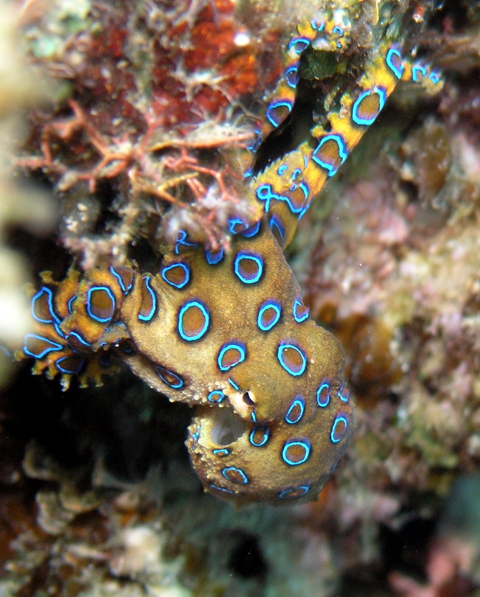

Welcome to the page that is solely devoted to the Blue Ringed Octopus. Throughout this page you will learn about this beautiful and tiny creature that most definitely could kill you and me.

Here's a description list of some, not all, of the Blue Ringed Octopus's traits:
It likes to hide
Due to the lack of bones, this octopus is a wonderful hider, it can fit into any space that its brain can fit in. During the day it hides in crevices, shells, and other rocks.
It is EXTREMELY venomous
This tiny octopus that fits in the palm of your hand is in its league of its own when it comes to venom. It is 1,000 times as powerful as cyanide and has enough venom to kill 26 grown humans within minutes. It is known as one of the most dangerous animals in the ocean.
There is no known antidote as of now
The venom blocks nerve signals throughout the body, causing muscle numbness and blindness, which will cause respiratory arrest. As of now the only known way of treatment is to immediately start artificial respiration until the side effects wear off.
It is a non-aggressive species
This octopus only attacks when it is hunting or attacked. The blue-ringed octopus is not an aggressive species and only bites humans if cornered or handled, so don’t be dumb and try to cuddle it and you’ll be alright.
This tiny little non-bird has got a beak
This is one of the few animals that are not birds that have beaks, but they use it the same way. Most octopuses have beaks allowing them to break the prey’s exoskeleton to insert the venom.